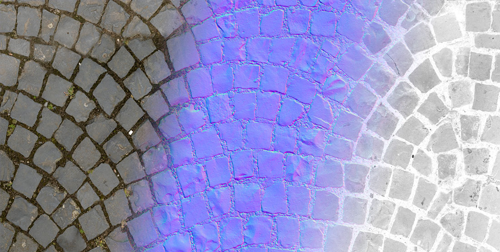

Textures

Textures are assets that usually contains an image. In Evergine they are mostly used in materials to provide color detail in your application. How the texture is viewed in your application depends of the material itself. For example, a texture can be used as diffuse or emissive color information.
Textures can also be used in other areas, like Sprites or UI elements.
Mipmapping
Evergine also supports mipmapping. It can generate or loads the successive half reduction of the texture, consisting the mip levels. This process is crucial when dealing with Texture Filtering (anisotropic, linear, bilinear, etc).

Texture types
Evergine supports these basic GPU textures types (They are detailed in this section)
- Texture2D
- Texture1D
- Texture1DArray
- Texture2DArray
- TextureCube
- TextureCubeArray
- Texture3D
Supported file types.
Evergine supports importing the following texture types:
.png.jpg.jpeg.bmp.gif.tga.dds.ktx.hdr
Note
Evergine will only import the first frame of any animated image file like .gif and will load like an static Texture.